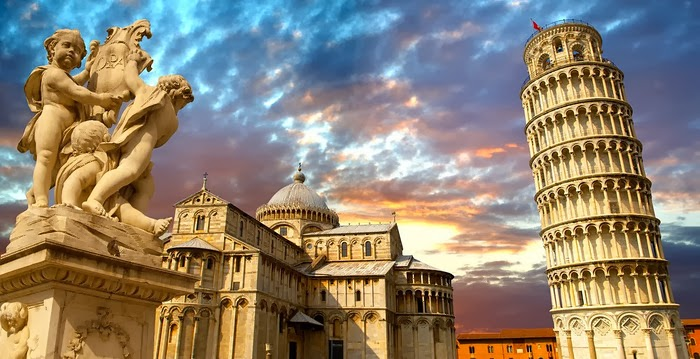

The Freestanding Bell Tower

Pisa is a city and comune in Tuscany, central Italy, straddling the Arno just before it empties into the Ligurian Sea. It is the capital city of the Province of Pisa. Although Pisa is known worldwide for its leaning tower (the bell tower of the city's cathedral), the city of over 91,104 residents (around 200,000 with the metropolitan area) contains more than 20 other historic churches, several medieval palaces, and various bridges across the Arno. Much of the city's architecture was financed from its history as one of the Italian maritime republics.
The city is also home of the University of Pisa, which has a history going back to the 12th century and also has the Scuola Normale Superiore di Pisa, founded by Napoleon in 1810, and its offshoot, the Sant'Anna School of Advanced Studies, as the best-sanctioned Superior Graduate Schools in Italy.